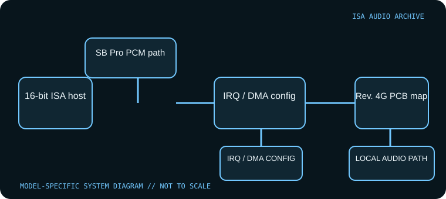

[ INDIVIDUAL COMPONENT // SOUND HARDWARE ]
Reveal SC400 PRO 16
The Reveal SC400 PRO 16 name covers multiple board revisions and OEM configurations. This record describes the model family and labels the cited jumper table as Rev. 2 only; other SC400 revisions may use different chipsets, headers or jumpers. Compare the actual PCB revision and manual before applying any resource map.

Model-specific specifications
| Catalog identity | Reveal SC400 PRO 16 family. Similar SC400 naming includes other revisions; this entry does not guarantee identical circuitry across the range. |
|---|---|
| Bus / host | 16-bit ISA PC-compatible systems; the cited Rev. 2 reference identifies this bus. Intended for DOS/Windows 3.1-era drivers; modern systems without ISA do not directly support it. |
| Sound engine / I/O | SB Pro-compatible ISA audio with FM/game-port functionality; exact codec/chipset and CD-ROM interface must be verified from the specimen markings. The cited Rev. 2 configuration reference lists analog audio, DA-15 game/MIDI, CD-ROM interfaces and a wavetable connector. |
| IRQ | The cited Rev. 2 jumper table does not identify a selectable IRQ. Verify the actual interrupt in the matching installation utility/driver and treat any IRQ value found online for another revision as unverified. |
| DMA | The cited Rev. 2 jumper table explicitly permits DMA 0, 1 or 3 via JP2/JP3. Confirm whether those positions apply to the specimen revision and match the selected DMA with DOS software. |
| Software / host compatibility | Archived DOS/Windows 3.1 driver set supports period compatible PCs. SB Pro game support depends on the installed driver and the card’s exact resource selection; modern OS support is not asserted. |
| Service / connectors | Inspect PCB revision, codec markings, CD interface and game/MIDI connector. Preserve the archived Reveal setup files with their revision notes; do not hot-plug ISA hardware. |
Compatibility & configuration notes
SC400 records are particularly vulnerable to mistaken cross-revision jumper settings. The driver archive is useful evidence of period DOS/Windows support, while the Rev. 2 jumper reference documents the card’s 16-bit ISA interface and DMA positions. The table does not establish an IRQ or codec identity; read those from the actual board and matching software. Photograph jumpers and markings before first power-up.
- Photograph model/revision markings, resource switches or jumpers, connector panel and installed options before installation.
- For every configured IRQ, DMA channel, I/O address and driver, record the actual setting used by the host; do not rely on a family name or an assumed default.
- Power down and unplug the host before fitting or removing an ISA card; retain period setup tools and documentation with the specimen.
Sources & archival documentation
- Internet Archive — Reveal SC400 DOS/Windows 3.1 driversArchived driver software for the Reveal SC400 ISA family.
- Stason.org — Reveal SC400 PRO 16 Rev. 2 configurationArchival jumper table for Rev. 2, including selectable 16-bit ISA DMA channels; not a substitute for the card’s own revision markings.
Where related model variants exist, the original manual and the physical card’s complete part/revision marking take precedence over generalized family summaries.